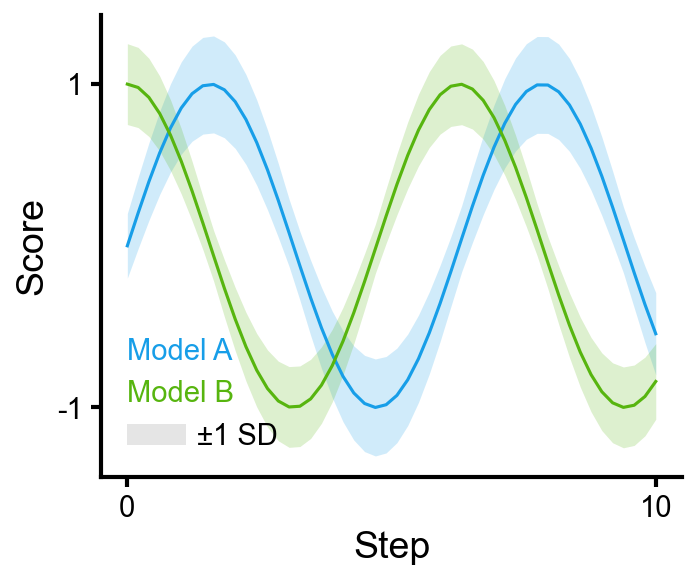
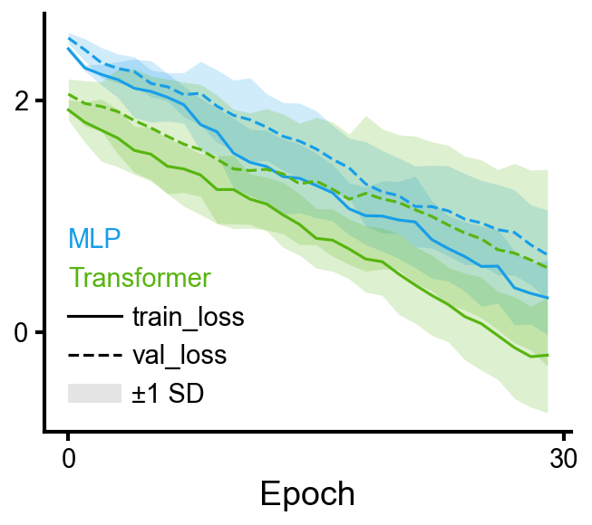
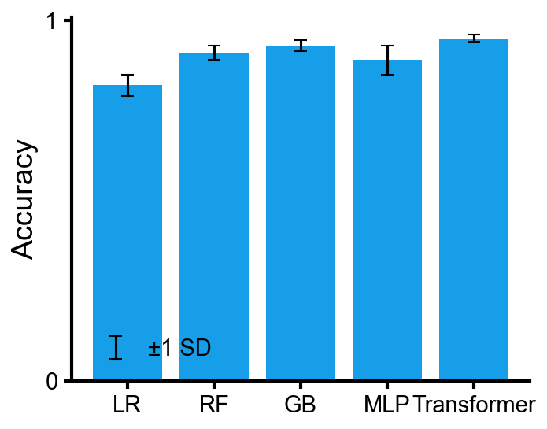

A reference for the cleanplots-specific API. Assumes matplotlib familiarity.
import numpy as np
import pandas as pd
import cleanplots as cp
import matplotlib.pyplot as pltEvery plot starts with cp.fig() and ends with
ax.clean().
f, ax = cp.fig() # single axes
f, axes = cp.fig(rows=2, cols=2) # grid
f, (ax1, ax2) = cp.fig(cols=2) # side-by-side
ax.clean(xlabel='X', ylabel='Y') # standard cleanup
ax.clean(ticks=None, spines=None) # no axes (for images)Input forms. line, bar,
barh, and scatter all accept the same input
shapes:
ax.line(y_values) # x inferred as range
ax.line(x_values, y_values) # standard
ax.line([y1, y2, y3], label=['A', 'B', 'C']) # list of arrays → multiple seriesError representation. err= adds error
visualization (shaded band for lines, error bars for bar/scatter).
err_label= creates a single shared legend entry for the
error.
Legend. clean() builds the legend
automatically. Pass legend=False to any plot call to
suppress it entirely. To reposition:
ax.line(x, y, label='A', legend=False) # no legend on this axes
ax.get_legend().set_loc('upper left') # or reposition after clean()Color labels. clean() automatically
replaces multi-color legend entries with colored text. To place a
color-label block manually:
ax.color_labels(['MLP', 'RF', 'Transformer'], x=0.05, ha='left')
f, ax = cp.fig()
ax.line(x, y1, err=std1, label='Model A', err_label='±1 SD')
ax.line(x, y2, err=std2, label='Model B')
ax.clean(xlabel='Step', ylabel='Score')
A single color= and alpha= on a list of
arrays overlays them in the same color. A single label=
string produces one shared legend entry.
f, ax = cp.fig()
ax.line(runs, color=cp.colors[0], alpha=0.3, label='Runs')
ax.line(np.mean(runs, axis=0), color=cp.colors[0], lw=2, label='Mean')
ax.clean(xlabel='Step', ylabel='Reward')
Rows map to colors, columns to line styles. err= adds
shaded bands.
A typical starting point is a flat run log:
>>> runs
model seed train_loss val_loss
0 MLP 0 [2.48, 2.33, ...] [2.59, 2.42, ...]
1 MLP 1 [2.51, 2.30, ...] [2.62, 2.40, ...]
2 MLP 2 [2.46, 2.34, ...] [2.58, 2.43, ...]
3 Tx 0 [1.98, 1.87, ...] [2.09, 1.96, ...]
4 Tx 1 ... ...Aggregate across seeds:
pivot = (runs.drop(columns='seed').groupby('model')
.agg(lambda s: np.mean(np.stack(s.values), axis=0)))
pivot_std = (runs.drop(columns='seed').groupby('model')
.agg(lambda s: np.std (np.stack(s.values), axis=0)))f, ax = cp.fig()
ax.line(pivot, err=pivot_std, err_label='±1 SD')
ax.clean(xlabel='Epoch')
DataFrames from cp.data.collapse() have MultiIndex
columns. The top column level maps to line styles, remaining levels map
to colors.
mean = cp.data.collapse(df, index='epoch', values=['train_loss', 'val_loss'],
over='seed', func='mean')
std = cp.data.collapse(df, index='epoch', values=['train_loss', 'val_loss'],
over='seed', func='std')
f, ax = cp.fig()
ax.line(mean, err=std, err_label='±1 SD')
ax.clean(ylabel='Loss')
f, ax = cp.fig()
ax.bar(model_names, accuracies, err=stds, err_label='±1 SD')
ax.clean(ylabel='Accuracy')
barh mirrors bar with horizontal
orientation (same input forms, err=, DataFrame grouping,
log_x=):
f, ax = cp.fig()
ax.barh(model_names, accuracies, err=stds, err_label='±1 SD')
ax.clean(xlabel='Accuracy')A DataFrame produces grouped bars (columns → groups, rows → categories):
f, ax = cp.fig()
ax.bar(df, err=err_df, err_label='±1 SD')
ax.clean(ylabel='Score')
ax.get_legend().set_loc('upper left')
yerr= and xerr= add error bars. Use
err_label=, xerr_label=,
yerr_label= for legend entries.
f, ax = cp.fig()
ax.scatter(x, y, xerr=xerrs, yerr=yerrs, label='Model A',
xerr_label='time uncertainty', yerr_label='accuracy uncertainty')
ax.clean(xlabel='Training time (min)', ylabel='Accuracy')
An Nx2 array or DataFrame splits into x, y (DataFrame column names become axis labels); Nx3 uses the third column as marker size.
ax.scatter(df[['PC1', 'PC2']], s=15, alpha=0.6)
group= assigns colors from the cycle and creates legend
entries. Mutually exclusive with c=. Array-valued kwargs
like edgecolors are automatically split per group.
f, ax = cp.fig()
ax.scatter(df['x'], df['y'], group=df['class'],
edgecolors=cp.cmaps.inferno(df['confidence']), linewidths=1.5)
cb = ax.add_colorbar(cp.cmaps.inferno, values=df['confidence'])
cb.set_label('confidence')
ax.clean(xlabel='x', ylabel='y')ax.add_colorbar(cmap, values) creates a colorbar from a
colormap and the data values that were mapped through it. Works on any
axes, not just scatter.
cb = ax.add_colorbar(cp.cmaps.inferno, values=data) # range from data
cb = ax.add_colorbar(cp.cmaps.inferno, vmin=0, vmax=1) # explicit range
cb.set_label('confidence')
cb.set_ticks([0, 0.5, 1])Takes a 2-d array or DataFrame. Handles annotations, colorbar, and tick labels. DataFrame index/column names become axis labels automatically.
f, ax = cp.fig()
cb = ax.heatmap(conf, fmt='d', cmap='Blues')
ax.clean(ticks=False, spines=None)
heatmap returns the matplotlib Colorbar
object (or None if cbar=False), so you can set
its label, ticks, etc. directly:
cb = ax.heatmap(data, cmap='Blues')
cb.set_label('Count')
cb.set_ticks([0, 25, 50])For custom annotation strings, pass annot_strings= with
a same-shape array or DataFrame:
means = cp.data.collapse(df, 'gamma', 'test_accuracy', over='fold', func='mean')
stds = cp.data.collapse(df, 'gamma', 'test_accuracy', over='fold', func='std')
annot = means.round(2).astype(str) + '±' + stds.round(2).astype(str)
f, ax = cp.fig()
ax.heatmap(means, annot_strings=annot, cmap='Blues')
ax.clean(ticks=False, spines=None)box, violin, strip, and
hist all take a dict of group name → array (or DataFrame /
list of arrays). box, violin, and
strip default to a single color; hist uses the
color cycle.
data = {'LR': scores_lr, 'RF': scores_rf, 'GB': scores_gb, 'MLP': scores_mlp}
ax.box(data) # or ax.violin(data), or ax.strip(data)


hist draws overlaid histograms with shared bins. Uses
histtype='stepfilled' and alpha=0.5 by
default. Extra kwargs forward to matplotlib’s hist.
f, ax = cp.fig()
ax.hist([baseline, tuned, ablation],
label=['Baseline', 'Tuned', 'Ablation'],
bins=40, density=True)
ax.clean(xlabel='Prediction error', ylabel='Density')
log_x=True gives log-spaced bins on a log x-axis.
bw_method= on violin controls KDE smoothing
(Scott’s rule by default). box, violin, and
strip accept a pivot DataFrame for grouped layouts (index →
x-axis categories, columns → colored groups, matching
bar).

f, axes = cp.fig(rows=2, cols=2)
axes[0, 0].line(loss); axes[0, 0].clean(ylabel='Loss', xlabel='Epoch')
axes[0, 1].bar(['A', 'B', 'C'], vals); axes[0, 1].clean(ylabel='Accuracy')
axes[1, 0].scatter(embeddings, s=20); axes[1, 0].clean(xlabel='PC1', ylabel='PC2')
axes[1, 1].box({'M1': s1, 'M2': s2}); axes[1, 1].clean(ylabel='Score')
f.tight_layout()
f.subplots_adjust(hspace=0.55, wspace=0.45) # when labels overlap
cp.data)Helpers for the tidy → wide → aggregated pipeline common in ML
experiments. Loud errors over silent wrong numbers (uses
pivot, not pivot_table).
Starting from tidy data:
model lr seed epoch train_loss val_loss
0 resnet 0.01 0 0 0.82 0.91
1 resnet 0.01 0 1 0.54 0.63
...# Lossless pivot: every non-index, non-value column becomes a column level
wide = cp.data.to_wide(df, index='epoch', values=['train_loss', 'val_loss'])
# Aggregate over a column level (like xarray .mean(dim=...))
mean = cp.data.agg_over(wide, col_level='seed', func='mean')
std = cp.data.agg_over(wide, col_level='seed', func='std')
# Or in one step:
mean = cp.data.collapse(df, index='epoch', values=['train_loss', 'val_loss'],
over='seed', func='mean') # func is required
# Filter by column level (like xarray .sel())
cp.data.slice(mean, model='resnet')
cp.data.slice(mean, metric='train_loss', lr=0.01)Note on std: func='std' uses pandas default
(ddof=1, sample std). With few seeds, this differs from
np.std (ddof=0).
Access via cp.cmaps.<name>.
| Category | Default | Other options |
|---|---|---|
| Sequential | 
inferno |
plasma
viridis
magma |
| Diverging |  RdBu |
coolwarm PiYG |
| Binary |  gray |
— |
| Categorical | 
categorical |
(built from cp.colors) |
| Cyclic |  phase
(cmocean) |
— |
Matplotlib features that cleanplots doesn’t wrap. Work on any
CleanAxes (it’s an Axes subclass).
ax.tick_params(axis='x', rotation=45)
plt.setp(ax.get_xticklabels(), ha='right')
ax.annotate('best',
xy=(150, 0.93), xytext=(100, 0.80),
fontsize=11,
arrowprops=dict(arrowstyle='->', color='gray', lw=1))
ax.set_aspect('equal')